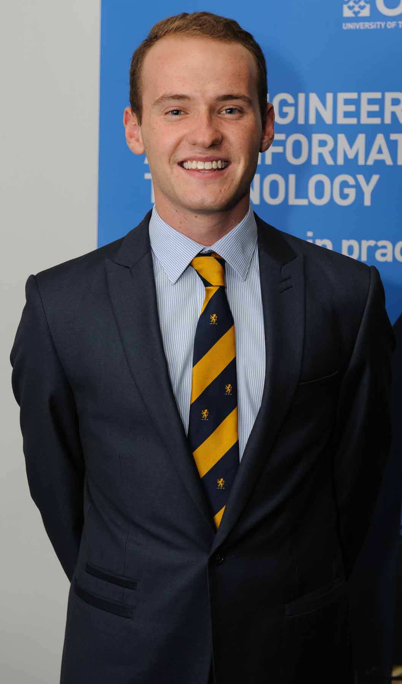

Home
Hi! My name is Jack Pascoe and I am a first year in the UTS bachelor of IT co-op program.
This is my website for Web Systems Assignment 1.
So what's on this site?
Home
This is the current page you're viewing! I will use it to outline who I am, and what this website contains.
Past
This page will outline my past in both software development and life! I hope it's informative and explains what has led me to this point.
Future
This page explores where I went to go, what I hope to learn and my general plan for University and post-grad. Currently it's very up in the air, but should give a general explanation for my plan.
Comments
This page explores the technical, aesthetic and accessibility features of the site. It will be used to break down the process of creating the website and the consideration of the above features.
So who in the hell are you?
I am a guy from the South of Sydney (Blakehurst) and am extremely passionate about most things tech. Not poorly done robotics. That's the worst. I am hoping to become a software developer and make products that change the lives of people that use them. Or just disrupt a market and make a lot of money.